Ergonominen
columnar stagger
näppäimistö
Sisältö
- Syyt projektillle
- Ohjelmistot
- OpenSCAD
- PrusaSlicer
- Projekti
- Kotelo
- Näppäimet
- Osien 3D-mallit
- Post mortem
1. Syyt projektille
Olen pitkään ihmetellyt, miksi modernit näppäimistöt ovat aseteltu samalla tavalla kuin kirjoituskoneet aikoinaan. Tämä asettelu, jossa kotiriviä (ASDFG...) ylempi rivi on siirretty vasemmalle 4.7625mm (3/16") ja kotirivin alempi rivi on siirretty oikealle 9.525mm (3/8"), johtui alunperin siitä, että kirjoituskoneiden mustetta paperiin lyövien vasarien vetimien on halvasti massatuotetussa menetelmässä oltava kaikki vierekkäin ilman suuria kulmia.
Illustraatiosta näkyy, miten eri rivien näppäimet kulkevat lomittain toistensa kanssa; 1 Q A 2 Z W S 3 X... eli riveittäin (1) 2 3 1 4 2 3 1 4... Jos kirjoituskoneen vasarien vetimet olisivat L -kirjaimen muotoisia leveys-syvyys-tasolla, niin näppäimet voisivat olla suorissa sarakkeissa muodostaen ortholineaarisen ristikon.
Tämä row stagger eli rivien porrastus ei kuitenkaan haitannut kirjoittamista liikaa, ja siihen ihmisten totuttua oli turha alkaa korjaamaan, koska se aiheuttaisi tarpeen totutella muutokseen, johon kuluva tuntematon ajanmäärä ei ollut sen arvoista, varsinkin kun hyvää nopeutta kirjoittaminen oli tärkeää eri työtehtävissä, jolloin porrastuksen korjaaminen voisi vaikuttaa työnteon tehokkuuteen (sama näppäinten QWERTY-asetelman kanssa).
Kyseinen muuttumattomuus jatkui myös kun kirjoituskoneet sähköistyivät, ja kun kirjoituskoneista siirryttiin tietokoneisiin ja niiden näppäimistöihin, koska ne joille uudet kirjoituslaitteet tehtiin, olivat ne jotka olivat käyttäneet edellisiäkin kirjoituslaitteita. Se valmistaja joka olisi aloittanut muutoksen, olisi kärsinyt siitä myynneissään ja tuote olisi todennäköisesti epäonnistunut.
Näin ollen, ne harvat valmistajat jotka nykyään tuottavat näppäimistöjä ilman rivien porrastusta joutuvat asettamaan kyseisille tuotteille korkeamman hinnan myynnin alhaisen määrän vuoksi. Itse en halua (tai pysty) maksamaan yli viittäkymmentä euroa näppäimistöstä, niin päätin kokeilla tehdä ortholineaarisen näppäimistön itse. Sain tämän ensimmäisen näppäimistöni tehtyä ~2018, mutta 2022 purin sen osiin koska halusin käyttää samoja osia (varsinkin kytkimiä) uuden näppäimistön rakentamiseen. Tämä kuitenkin viivästyi.
Koska olin jo päässyt kokeilemaan ortholineaarisella kirjoittamista edellisellä näppäimistölläni, suunnittelin seuraavaksi rakentaa ergonomisemman näppäimistön jonka sarakkeet olisivat porrastettuja, yrittäen muotoilla näppäimistön asettelua ihmiskädelle, jonka sormet lähtevät kämmenestä eri kohdista ja ovat myös eri pituisia. Olin kuitenkin epävarma kyseisen projektin toteuttamisesta, koska käytin tuolloin rivi-porrastettua näppäimistöä, ja ajattelin että siitä vaihtaminen suoraan sarake-porrastettuun voisi olla liian suuri muutos.
Työstin erilaisia enempi ja vähempi ergonomisia prototyyppejä ennen kuin päädyin toteuttamaani suunnitelmaan. Tarve uudelle näppäimistölle jota voisin kuljettaa mukanani laukussani kasvoi ensimmäisen TOP-jakson lähestyessä, koska kannettavan tietokoneeni näppäimistöstä puuttuu muutama näppäin, ja sen kaksi saraketta jopa lakkasi toimimasta täysin kyseisen TOP-jakson aikana.
, ja . näppäimet.Aikaa TOP-jakson alkuun oli enää kaksi viikkoa, ja halusin saada mukavamman kirjoittamiskokemuksen siihen mennessä valmiiksi. Täten ryhdyin työstämään väliaikaista näppäimistöä, joka on tämän raportin keskitys.
2. Ohjelmistot
OpenSCAD
Ennen kyseistä projektia olin tottunut käyttämään kaikkiin CAD-tarpeisiini FreeCAD -ohjelmistoa. FreeCAD'issa on kuitenkin useita ongelmia käyttöliittymään liittyen, sekä undo ja redo -komentojen kanssa, joka joskus johtaa ohjelmiston kaatumiseen. Olin jonkin aikaa suunnitellut kokeilla OpenSCAD -ohjelmistoa sen muokkaamisen käyttöliittymättömyyden vuoksi, sekä siksi, että se on täydellisemmin parametrinen kuin FreeCAD.
Käyttöliittymän sijaan, OpenSCAD'issa 3D mallit luodaan kirjoittamalla OpenSCAD'in omaa koodikieltä .scad tiedostoihin. Kyseisiä 3D malleja pystyy esikatselemaan OpenSCAD'in ohjelmistolla. Näin syntyy OpenSCAD'in käyttökokemus, koodia kirjoitetaan tiedostoon ja sen tallentaessa 3D malli päivittyy ohjelmiston 3D-näkymään automaattisesti jos se on auki, jolloin näkee tekemänsä muutokset. Verrattuna FreeCAD'iin, OpenSCAD on yleensä hyvin suoritustehoinen, sillä laskutoimitukset koodissa ovat usein yksinkertaisempia kuin FreeCAD'in restriction-perusteiset laskut. Tämä kuitenkin tarkoittaa myös, että OpenSCAD soveltuu parhaiten yksinkertaisemman geometrian luomiseen.
// Fragment number
//$fn = $preview ? 0 : 128;
// Fragment angle
$fa = 4;
// Fragment size
$fs = $preview ? 1/2 : 1/5;
// Outemu columnar vars:
switchSpacing = 19.05;
switchHole = 14;
switchLegHole = 3.1;
switchLegHoleDistance = 1;
switchLegHoleWidth = 0.8;
switchLatchHole = 5;
switchLatchHoleDepth = 1;
plateThickness = 1.5;
thumbKeyCount = 4;
halfAngle = 15;
halfOffset = [15, 54, 0];
halfSwitchOffset = [-switchSpacing-(switchSpacing-switchHole)/2,
-switchSpacing*2-(switchSpacing-switchHole)/2];
columnOffset = switchSpacing/4;
thumbOffset = -switchSpacing;
offsets = [-columnOffset, 0, columnOffset, 0, -columnOffset ];
// Original diameter = 8
borderDiameter = 13;
holeDiameter = 3.75;
// Apple macbook 14 vars:
laptopHeight = 227;
laptopWidth = 325;
laptopThickness = 8;
trackpadHeight = 76;
trackpadWidth = 105;
trackpadDepth = 2;
trackpadOffset = [110, 136];
keyboardHeight = 114;
keyboardWidth = 283;
keyboardDepth = 2;
keyboardOffset = [0, 17];
keysHeights = [18.5, 16, 16, 16, 16, 9.5];
keysPadding = 5;
keysGap = 2.5;
// Functions
function add(v) = [for(p=v) 1]*v;
function cumulativeSum(values) = [ for (a=0, b=values[0]; a < len(values); a = a+1, b = b+(values[a]==undef?0:values[a])) b];
function flatten(list) = [for (a=list) for (b=a) b ];
// Measuring
translate( [0, 0, -3] )
*cube( [240, 200, 1], center=true );
*cube( [30, 100, 10], center=true );
// Teensy
translate( [0, (borderDiameter-8)/2, 0] )
translate( [0, 46.3, -3.1] )
group()
{
color( "#5a5" )
cube( [17.78, 50.8, 1.6], center=true );
color( "#ccc" )
translate( [0, 50.8/2-9.2/2+0.6, 4/2+1.6/2] )
cube( [7.7, 9.2, 4], center=true );
color( "#ccc" )
translate( [0, -50.8/2+3.2/2+2.85, 1.5/2+1.6/2] )
cube( [4.2, 3.2, 1.5], center=true );
}
// High quality Teensy
color( "#5a5" )
translate( [0, (borderDiameter-8)/2, 0] )
translate( [0, 48.4, 0.2] )
*import("../teensy++2.0.stl");
// Bolt
a = 0.3;
color( "#bbb" )
translate(halfOffset)
rotate(halfAngle)
//translate( [switchSpacing*4.415-a, -switchSpacing*.651+a, 10] )
//translate( [switchSpacing*4.415-a, -switchSpacing*.651+a, 10] )
translate( [0,0,10] )
for (hole=boltHoles)
{
translate( hole )
group()
{
cylinder(d=6, h=2.5);
*#cylinder(d=8, h=1);
mirror( [0, 0, 1] )
cylinder(d=2.5, h=20);
}
}
// Macbook
combinedHeightsUnflattened = cumulativeSum(keysHeights);
combinedHeights = flatten([[0],combinedHeightsUnflattened]);
translate( [0, 7.5, -6] )
*group()
{
// Macbook chassis & trackpad
color( "#eee" )
translate( [0, 0, -laptopThickness] )
difference()
{
difference()
{
cube( [laptopWidth, laptopHeight, laptopThickness], center=true );
translate( [0, trackpadHeight-trackpadOffset.y, laptopThickness/2] )
cube( [trackpadWidth, trackpadHeight, trackpadDepth], center=true );
}
translate( [0, keyboardHeight/2-keyboardOffset.y, laptopThickness/2] )
cube( [keyboardWidth, keyboardHeight, keyboardDepth], center=true );
}
color( "#fff" )
translate( [-trackpadWidth/2, -trackpadHeight/2 +trackpadHeight-trackpadOffset.y, -laptopThickness/2-2.5] )
cube( [trackpadWidth, trackpadHeight, trackpadDepth] );
// Macbook keyboard keys
//function add(v, i=0, r=0) =1 < len(v) ? add(v, i + 1, r + v[i]) : r;
//for ( height = keysHeights )
echo(combinedHeights);
color( "#111" )
translate( [-keyboardWidth/2 + keysPadding, -keyboardOffset.y + keysPadding] )
for ( height = [0:len(keysHeights)-1] )
{
combined = combinedHeights[height];
translate( [0, combined+height*keysGap, -laptopThickness/2-keyboardDepth] )
cube( [keyboardWidth-keysPadding*2, keysHeights[height], keyboardDepth] );
}
}
// Switch mockup
color( "#f00" )
translate( halfOffset + [0, 0, -5+plateThickness+0.01] )
rotate(halfAngle)
translate( [2*switchSpacing, -3*switchSpacing, 0] )
group()
{
cube( [switchHole, switchHole, 5] );
mirror( [0,0,1] )
translate( [switchHole/2, switchHole/2] )
cylinder( h=3 );
mirror( [0,0,1] )
translate( [2.5, 9.5] )
cube( [1, 1/3, 3.5] );
mirror( [0,0,1] )
translate( [9, 12] )
cube( [1, 1/3, 3.5] );
translate( [switchHole/2, switchHole/2, 5+9/2+7] )
cube( [18, 18, 9], center=true );
}
// Outemu top cover
!for (m=[0:1])
mirror([m,0,0])
group()
{
translate( [0, 0, plateThickness] )
difference()
{
//*
//minkowski()
group()
{
//create_shell_shape( 8.5 );
translate( halfOffset )
rotate( halfAngle )
translate( halfSwitchOffset )
linear_extrude( 8.5 )
offset(borderDiameter/2)
create_shell_polygon();
*cylinder( d1=borderDiameter, r2=6, h=8.5-0.01 );
}
scale( [1, 1, 8] )
create_key_holes( 9 );//*/
//create_key_holes( 8.5 );
translate( [0, 0, 2.5] )
*minkowski()
{
create_key_holes( 0.01 );
cylinder( d1=borderDiameter, r2=4, h=8.5-0.01 );
}
create_key_holes( 20 );
scale( [1, 1, 30] )
create_bolt_holes();
rotate( halfAngle )
translate( [12, 37, 9/2] )
minkowski()
{
group()
{
cube( [20-4, 51-4, 0.01], center=true );
rotate( -halfAngle )
translate( [-1, 19.75, 0] )
cube( [5.3, 10, 0.1], center=true);
}
cylinder( d1=0, d2=6, h=10-0.01, center=true );
}
mirror([1,0,0])
translate( [0, -20, -20] )
cube( [100,100,100] );
}
}
// Outemu columnar plate
group()
{
for (m=[0:1])
mirror([m,0,0])
mirror( [0, 0, 1] )
// Teensy supports
*group()
{
translate( [3, 23.5] )
cube( [3, 4, 2.3] );
translate( [4.2, 65.1] )
cube( [2, 3, 2.3] );
}
difference()
{
// Plate
render()
for (m=[0:1])
mirror([m,0,0])
create_shell_shape( plateThickness );
// Switch holes
group()
{
create_switch_holes();
/*for (m=[0:1])
mirror([m,0,0])
translate( halfOffset - [0, 0, plateThickness] )
rotate(halfAngle)
group()
{
for ( offsetIndex=[0:len(offsets)-1] )
{
translate( [offsetIndex*switchSpacing, columnOffset+offsets[offsetIndex] ] )
for ( i=[0:2] )
{
translate( [0, -i*switchSpacing] )
create_switch_hole();
}
}
translate( [thumbOffset, -3*switchSpacing, 0] )
for ( i=[0:thumbKeyCount-1] )
{
translate( [switchSpacing*i, 0, 0] )
create_switch_hole();
}
}*/
}
// Holes
for (m=[0:1])
mirror([m,0,0])
create_bolt_holes( 3*plateThickness );
translate( [0, (borderDiameter-8)/2, 0] )
group()
{
// Mini USB-port cutout
translate( [0, 69] )
cube( [8, 12, plateThickness*4], center=true );
// Reset button cutout
translate( [0, 22] )
group()
{
cube( [6, 1, plateThickness*4], center=true );
for (m=[0:1])
mirror([m,0,0])
translate( [2, 0, -plateThickness] )
cube( [1, 10, plateThickness*4] );
}
}
}
}
// Outemu columnar base
// 7 mm is the maximum available space
height = 8;
thickness = 2;
group()
{
// Outemu columnar walls
difference()
{
for (m=[0:1])
mirror([m,0,0])
translate( halfOffset )
rotate( halfAngle )
translate( halfSwitchOffset )
mirror( [0, 0, 1] )
difference()
{
difference()
{
minkowski()
{
linear_extrude( 0.01 )
offset(borderDiameter/2)
create_shell_polygon();
cylinder(r2=1, r1=0, h=height-0.01);
}
translate( -halfSwitchOffset )
rotate( -halfAngle )
translate( -halfOffset )
mirror( [1, 0, 0] )
translate( [0, -50, -1] )
cube( [50, 200, height*2] );
}
linear_extrude( height*2.1, center=true )
offset(borderDiameter/2-2)
//offset(-1.5)
create_shell_polygon();
translate( -halfSwitchOffset ){
rotate( -halfAngle ){
translate( -halfOffset ){
create_bolt_holes( height*2.1 );}}}
}
translate( [0, (borderDiameter-8)/2, 0] )
group()
{
translate( [0, 70, 0] )
{
cube( [7, 10, 5], center=true );
translate( [0, 0, 1.7] )
cube( [8, 10, 5], center=true );
}
translate( [0, 66.8+0.4, -1.7] )
cube( [19, 10, 5], center=true );
}
}
for (m=[0:1])
mirror([m,0,0])
difference()
{
#minkowski()
{
translate( [0, 0, -height/2-0.5] )
create_bolt_holes( height-1 );
cylinder(d=2);
}
union()
{
translate( [0, 0, -height] )
create_bolt_holes( height*4 );
translate( [0, -30+10, 0] )
*cube( [10, 15.3, height*8], center=true );
}
}
// Outemu columnar backplate
difference()
{
for (m=[0:1])
mirror([m,0,0])
translate( halfOffset )
rotate( halfAngle )
translate( halfSwitchOffset )
translate( [0, 0, -height] )
mirror([0,0,1])
minkowski()
{
//linear_extrude( 0.1 )
linear_extrude( thickness )
offset( borderDiameter/2 + 1 )
create_shell_polygon();
//cylinder( h=thickness-0.1, d1=borderDiameter+1.1, d2=borderDiameter+2.1);
}
// Outemu columnar feet mockup
intersection()
{
for ( height = [0:len(keysHeights)-1] )
{
combined = combinedHeights[height];
translate( [0, combined+height*keysGap - 4.5, -10+0.4] )
render()
for (m=[0:1])
mirror([m,0,0])
mirror( [0, 1, 0] )
mirror( [0, 0, 1] )
{
*cube( [keyboardWidth-keysPadding*2 - height, keysHeights[height], keyboardDepth] );
cube( [keyboardWidth/2, keysGap, keyboardDepth] );
mirror( [0, 1, 0] )
cube( [keyboardWidth/2, 0.4, keyboardDepth] );
translate( [0, keysGap, 0] )
cube( [keyboardWidth/2, 0.4, keyboardDepth] );
}
}
translate( [0, 0, -10] )
linear_extrude( 2, center=true )
for (m=[0:1])
mirror([m,0,0])
offset(-1)
translate( halfOffset )
rotate(halfAngle)
translate( halfSwitchOffset )
create_shell_polygon();
}
// Bolt holes
for (m=[0:1])
mirror([m,0,0])
create_bolt_holes( height*3 );//}}}
// Nut holes
for (m=[0:1])
mirror([m,0,0])
translate( [0, 0, -9-0.8] )
create_nut_holes( 2.1 );
}
translate( [0, (borderDiameter-8)/2, 0] )
group() // Teensy supports
{
translate( [0, 46.3, -5.95] )
rotate( [0, 0, 45] )
cube( [6, 6, 4.1], center=true );
translate( [0, 26, -5.95] )
cube( [5, 3, 4.1], center=true );
translate( [0, 19.2, -4.95] )
cube( [11, 3, 6.1], center=true );
translate( [0, 71.8, -4] )
difference()
{
cube( [22, 3, 8], center=true );
for (c=[0:1])
scale( [1, 1, 1] + [0, .6, .6]*c )
translate( [0, -0.45, -0.1]*c )
rotate( [45, 0, 0]*c )
translate( [0, 0, 1] )
difference()
{
cube( [19, 3, 2.4], center=true );
if (c == 1)
{
rotate( [45, 0, 0])
translate( [0, -3/2, 0] )
cube( [19, 3, 2.4], center=true );
}
}
translate( [0, 0, 2.3] )
cube( [8, 10, 5], center=true );
}
}
}
// Test columns
*difference()
{
minkowski()
{
cube( [switchSpacing*2, switchSpacing*4, plateThickness/2] );
// 6mm edge isn't enough
cylinder(d=6, h=plateThickness/2);
}
translate( [(switchSpacing-switchHole)/2, (switchSpacing-switchHole)/2, -plateThickness] )
for (x=[0:1])
translate( [x*switchSpacing, 0] )
for (y=[0:3])
translate( [0, y*switchSpacing] )
create_switch_hole();
cylinder(d=2.5, h=plateThickness*3);
translate( [switchSpacing*2, 0] )
cylinder(d=3, h=plateThickness*3);
translate( [0, switchSpacing*4] )
cylinder(d=3.5, h=plateThickness*3);
translate( [switchSpacing*2, switchSpacing*4] )
cylinder(d=4, h=plateThickness*3);
// 3.5-4mm holes work
}
module create_switch_hole()
{
difference()
{
group()
{
thickness = plateThickness*4;
union()
{
translate( [0, 0, -1] )
cube( [switchHole, switchHole, thickness] );
translate( [switchSpacing/2 - switchLatchHole, -switchLatchHoleDepth, 0] )
//translate( [0, switchSpacing/2 - switchLatchHole, plateThickness] )
// Latch hole for the switch to bite into if the case is too thick
*group()
{
cube( [switchLatchHole, switchLatchHoleDepth, plateThickness] );
//cube( [switchLatchHoleDepth, switchLatchHole, plateThickness] );
translate( [0, switchHole+switchLatchHoleDepth] )
cube( [switchLatchHole, switchLatchHoleDepth, plateThickness] );
//cube( [switchLatchHoleDepth, switchLatchHole, plateThickness] );
}
}
translate( [-switchLegHoleWidth, switchLegHoleDistance] )
cube( [switchHole + 2*switchLegHoleWidth, switchLegHole, thickness] );
translate( [-switchLegHoleWidth, switchHole-switchLegHole-switchLegHoleDistance] )
cube( [switchHole + 2*switchLegHoleWidth, switchLegHole, thickness] );
}
}
}
module create_shell_polygon()
{
polygon(
[
[cos(halfAngle)*-switchSpacing,sin(halfAngle)*switchSpacing-switchSpacing],
[0,-switchSpacing], // Bottom left
[switchSpacing*thumbKeyCount,-switchSpacing],
[switchSpacing*thumbKeyCount,0],
[switchSpacing*(thumbKeyCount+2),0], // Bottom right
[switchSpacing*(thumbKeyCount+2),switchSpacing*3],
[switchSpacing*4,switchSpacing*3+columnOffset*2],
[switchSpacing*3,switchSpacing*3+columnOffset*2],
[switchSpacing,switchSpacing*3],
[cos(halfAngle)*-switchSpacing+switchSpacing,sin(halfAngle)*switchSpacing+switchSpacing*3],
] );
}
module create_shell_shape( thickness )
{
difference()
{
translate( halfOffset )
rotate(halfAngle)
translate( halfSwitchOffset )
linear_extrude( thickness )
offset( borderDiameter/2 )
create_shell_polygon();
mirror( [1, 0, 0] )
translate( [0, -50, -plateThickness] )
cube( [50, 200, plateThickness*8] );
}
}
module create_bolt_holes( cylinderHeight )
{
//cylinderHeight = plateThickness*3;
for (hole=boltHoles)
{
if (hole==boltHoles[len(boltHoles)-1])
{
translate( hole )
cylinder( d=holeDiameter, h=cylinderHeight, center=true );
}
else
{
translate( halfOffset )
rotate( halfAngle )
translate( hole )
cylinder( d=holeDiameter, h=cylinderHeight, center=true );
}
}
}
module create_nut_holes( cylinderHeight )
{
$fn = 6;
nutDiameter = 5.25;
nutHexDiameter = nutDiameter/cos(180/$fn);
for (hole=boltHoles)
{
if (hole==boltHoles[len(boltHoles)-1])
{
translate( hole )
union()
{
cylinder( d=nutHexDiameter, h=cylinderHeight, center=true );
translate( [0, 0, 0.4] )
cube( [nutHexDiameter/2, nutDiameter, cylinderHeight], center=true );
}
}
else
{
translate( halfOffset )
rotate( halfAngle )
translate( hole )
union()
{
cylinder( d=nutHexDiameter, h=cylinderHeight, center=true );
translate( [0, 0, 0.4] )
cube( [nutHexDiameter/2, nutDiameter, cylinderHeight], center=true );
}
}
}
}
module create_switch_holes()
{
for (m=[0:1])
mirror([m,0,0])
translate( halfOffset - [0, 0, plateThickness] )
rotate(halfAngle)
group()
{
for ( offsetIndex=[0:len(offsets)-1] )
{
translate( [offsetIndex*switchSpacing, columnOffset+offsets[offsetIndex] ] )
for ( i=[0:2] )
{
translate( [0, -i*switchSpacing] )
create_switch_hole();
}
}
translate( [thumbOffset, -3*switchSpacing, 0] )
for ( i=[0:thumbKeyCount-1] )
{
translate( [switchSpacing*i, 0, 0] )
create_switch_hole();
}
}
}
module create_key_holes( height )
{
for (m=[0:1])
mirror([m,0,0])
translate( halfOffset - [0, 0, plateThickness] )
rotate(halfAngle)
group()
{
gap = 1;
for ( offsetIndex=[0:len(offsets)-1] )
{
translate( [offsetIndex*switchSpacing, columnOffset+offsets[offsetIndex] ] )
for ( i=[0:2] )
{
translate( [0, -i*switchSpacing] )
difference()
{
group()
{
union()
{
translate( [-(switchSpacing-switchHole)/2 - gap/2, -(switchSpacing-switchHole)/2 - gap/2, -1] )
cube( [switchSpacing+gap, switchSpacing+gap, height] );
}
}
}
}
}
translate( [thumbOffset, -3*switchSpacing, 0] )
for ( i=[0:thumbKeyCount-1] )
{
translate( [switchSpacing*i, 0, 0] )
difference()
{
group()
{
union()
{
translate( [-(switchSpacing-switchHole)/2 - gap/2, -(switchSpacing-switchHole)/2 - gap/2, -1] )
//cube( [switchSpacing+0.5, switchSpacing+0.5, height] );
cube( [switchSpacing+gap, switchSpacing+gap, height] );
}
}
}
}
}
}
//b = 6/borderDiameter;
//b = 6/10;
//unit = borderDiameter/2 - b;
//unit = 6/borderDiameter * borderDiameter/2;
//unit = borderDiameter/2 - 6/2;
b = sqrt(pow(borderDiameter/2, 2)/2) - sqrt(pow(6/2, 2)/2);
unit = (switchSpacing-switchHole)/2 + b;
boltHoles = [
[switchHole+switchSpacing*2 + unit, -switchSpacing*3 - unit],
[switchHole+switchSpacing*4 + unit, -switchSpacing*2 - unit],
[switchHole+switchSpacing*4 + unit, switchSpacing - (switchSpacing-switchHole) + unit],
[switchHole+switchSpacing*2 + unit, switchSpacing - (switchSpacing-switchHole) + unit + 2*columnOffset],
[switchHole + (switchSpacing-switchHole) - unit, switchSpacing + unit],
[0, -borderDiameter/2 - 8.75 + b]
];
// Add hex holes to the bottom, there should be extra geometry thanks to the hole cylinders
// > Done? Tested on ochafiik.com/openscad only
// Try deleting group() actions, seem redundant as per lack of docs
// > Didn't work! Grouping with {} isn't allowed without an action.
// Also try offset()t
// > Very pogOpenSCAD soveltui hyvin kyseiseen projektiin ja arvostan sen nopeutta sekä hauskuutta käyttää paljon, mutta en kuitenkaan pysty jättämään FreeCAD'ia kokonaan, sillä esimerkiksi orgaanisen tai muuten kurvikkaan geometrian luominen on liian haastavaa minulle tällä hetkellä OpenSCAD'issä.
PrusaSlicer
PrusaSlicer on pitkään ollut käyttämäni 3D-tulostettavien tiedostojen slicer. Vaikka joitain hyödyllisiä ominaisuuksia jotka löytyisivät esimerkiksi Cura'sta (josta vaihdoin PrusaSlicer'iin) ei ole, niin saan silti tulostettua mitä tarvitsen. Ohjelmisto soveltui hyvin projektiin.
Projekti
Kotelo
Koska suunnittelin näppäimistön käytettäväksi pääasiassa kannettavan tietokoneeni kanssa, niin aloitin projektin mittaamalla sen alaosan, sisältäen näppäimistön ja kosketuslevyn, jotta voisin luoda siitä viitemallin. Halusin että asettamani kumijalat näppäimistössä menisivät kannettavan näppäimistön väleihin, joka vähetäisi sen liikkumista, ja että kannettavan kosketuslevyä voisi käyttää uuden näppäimistön ollessa kannettavan päällä.
// MacbookEnnen varsinaisen näppäimistön mallintamisen aloittamista, mallinsin testilevyn, jolla pystyin testaamaan näppäimistön kytkimien, sekä kotelon pulttien mahtuvuutta 3D-tulostetusta palasta, koska 3D-tulostimet harvoin tulostavat 1:1 mittaisia reikiä. Kytkimien aukkoihin käytin viitteenä KeyboardLayoutEditor'in luomia kytkimien aukkoja, koska niihin olin tottunut ensimmäisen näppäimistön rakentamisesta.
Testilevyjä tulostellessa aloin samanaikaisesti työstämään näppäimistöä, aloittamalla kytkinlevystä, koska sitä suunnitellessa päättäisin myös kytkimien asettelun, eli näppäinten asettelun, joka puolestaan ohjaa koko näppäimistön muotoa ja suunnittelua. Aikaisemmista prototyypeistä oli apua, varsinkin viimeisestä (neljäs kuva), koska sen sarakkeiden syvyyttä pystyi muuttamaan, ja näin pääsin vähän kokeilemaan eri asetelmia.
Näppäinten asettelua suunnitellessa pyrin huomioimaan sitä asentoa mihin käteni haluavat luonollisesti asettua edessäni pöydällä, sekä sitä mihin sormeni ylttävät helposti. Suunnittelua kuitenkin rajoitti 3D-tulostimeni tulostusalueen koko, jonka vuoksi en olisi esimerkiksi pystynyt lisäämään pikkusormelle toista saraketta näppäimiä, vaikka en näin halunnutkaan tehdä, koska halusin näppäimistön olevan mahdollisimman pieni mutta käytännöllinen. Pikkusormi myös on heikoin sormi, niin en senkään vuoksi halunnut antaa sille liikaa rasitusta käytössä.
Näppäinasetelma mihin päädyin oli kolme riviä ja viisi saraketta plus neljä peukalo-näppäintä per käsi, 1/4u sarakkeiden syvyyserolla, kun u on 19.05mm tai 3/4", eli yhden näppäimen tila. Keskisormen sarake on siis kauimpana, ja syvyys laskee siitä 4.7625mm per sarake, joten nimettömän ja etusormen sarakkeet ovat samalla tasolla, kuten ovat pikkusormen sarake ja etusormen lisäsarake. Tein tämän sekä symmetrisyyden vuoksi, että sen vuoksi että sarakkeiden ero ei olisi liian suuri, jolloin siihen olisi helppo tottua. En myöskään vielä tiennyt millaista asetelmaa suosisin pitkällä aikavälillä vain prototyyppien perusteella.
// Outemu columnar plateLevyn jälkeen suunnittelin ja tulostin pohja osan koteloon, mutta jouduin kuitenkin tulostamaan levyn useampaan kertaan aluksi tietämättömän tulostin ongelman vuoksi. Tulostamani pohja ja kotelo eivät jostain syystä sopineet yhteen. Syy tähän olis se, että tulostimeni oli kokonaan vino Y-akselin suuntaan, eli X-akselin liike vaikutti myös Y-akselin suunnalla, jolloin kun käänsin levyn ympäri, se ei enää ollut yhteensopiva pohjan kanssa, vaikka molemmat osat ovat symmetrisiä. Kun vihdoin tajusin tämän niin minun piti hyväksyä etten voi piilottaa tulostuksen kuviota ja näyttää tulostuksen lasi-kiillotteista pintaa. Tulostin täten levyn vielä kerran uudestaan, mutta kiinnostavan näköisellä kuvioinnilla. Tulostimen uudelleen kokoaminen sai jäädä myöhemmäksi.
Alunperin en ollut huomioinut koteloon sitä, kuinka paljon tilaa pulttien mutterit veisivät pohjassa. Tämän takia kytkinlevy oli hieman pienempi pinta-alaltaan kuin mitä kotelon pitäisi olla, jotta mutterit jäisivät piiloon. Täten päätin lisätä pohjaan pienen jalkatason, johon mutterit jäisivät piiloon. Pohjan kuopat muttereille olivat kuitenkin liian pieniä, ja en saanut niitä paikalle edes kolvilla kuumentamalla. Tämän vuoksi nostin pohjan pinta-alaa vielä lisää, jota mutterit mahtuisivat paremmin. Lisäksi muutin pohjan reunuksen olemaan kalteva, koska en pitänyt siitä miltä laajennettu jalka näytti.
Alunperin en suunnitellut luovani korotettua päällisreunusta näppäimistöön, mutta kun en jaksanut sahata pultteja lyhyemmiksi kuten alunperin suunnittelin, niin päädyin sen luomiseen väliratkaisuna. Kytkien piilottaminen sattui myös näyttämään paremmalta niiden sopimattomien värien vuoksi.
Päällisen mallintaminen oli haastavin osa projektia. Vaikka minulla oli hieman ongelmia boolean-operaatioiden kanssa pohjan mallintamisessa, ne olivat helpompia korjata kuin mitä päällisen kanssa tuli vastaan. Päällisen mallintamisen olisi pitänyt olla helppoa; laajentaa levyn ulkoreunan mallia ylöspäin ja luo aukot näppäinten paikkojen perusteella. Ongelmana kuitenkin oli, että kun loin jokaisen näppäimen perusteella uuden boolean operaation, niiden sisikkyys toistensa kanssa loi ongelmia peräkkäisten, yhdistettyjen ja peilattujen boolean-operaatioiden kanssa kun loin boolean-operaation jokaisen näppäimen kohdalla. Jouduin luomaan erillisen yhtenäisen uuden muodon, jolla suorittaa yksittäinen boolean-operaatio, jonka tuloksen vasta putsasin ja peilasin luodakseni symmetrisen muodon, jotta selvisin päällisestä.
Vaikka näppäimistön kotelo ja elektroniikka olivat nyt valmiita, niin en kuitenkaan ollut valmis projektin kanssa. Viimeisessä näppäimistössä käyttämäni ja tähän näppäimistöön väliaikaisesti asentamani näppäimet olivat XDA-mallisia näppäimiä, joista pidin, mutta kun mittasin ne niin huomasin että ne olivat tarpeettoman korkeaksi suunniteltuja. Aloin täten suunnittelemaan omia näppäimiä.
Näppäimet
Luomalla omat näppäimet pystyisin alentamaan niiden korkeutta, jolloin käteni voisivat olla vähemmän epämukavan korkealla kirjoittaessa, mutta pystyisin myös lisäämään näppäimiin pienen kaartevuuden testatakseni pitäisinkö siitä ominaisuutena. Minulla ei myöskään ollut valmiiksi näppäimiä joissa olisi minkäänlaista kohotusta tunnistamaan ne kotinäppäinten kohdalla, ja halusin myös kohotukset peukalonäppäimille.
Olin kerran aikaisemmin yrittänyt tulostaa omia näppäimiäni, kuten näkee prototyyppi kuvissa. Näppäinten tulostamisessa vaikeaa kuitenkin on tulostussuunta ja näppäimen kytkimeen yhdistyvä varsi. Jos näppäimen tulostaa maaten, niin varren laatu on hyvä, mutta näppäimen päällispinta on huono, ellei nosta tulostustarkkuutta suuresti tai tyydy litteään näppäimeen. Ennenkin kun koitin tulostaa omia näppäimiä, niin tulostin ne 45 asteen kulmassa (1,1,0)-akselilla käännettynä, joka antoi hyvän pinnan näppäimelle, mutta varren tulostaminen oli haastavaa.
Nyt uudella yrityksellä yritin yhdistää eri tulostussuuntien parhaat osat tulostamalla näppäimen kahdessa osassa: näppäimen hattu ja varsi erikseen. Näin näppäimen hatun pinta olisi laadukas, ja varsi tulostuisi hyvin tarkasti, mahtuen jopa pyöreä aukkoiseen Gateron low profile-kytkimeen. Tulostuksen jälkeen laitoin pienen määrän kuumaliimaa varren jalkaan, ja painoin näppäimen yhteen. Lopputulos on ollut yllättävän hyvä käytössä, eikä yksikään näppäin ole kulunut rikki.
Näppäinten tulostamisessa kesti jonkin aikaa, koska en voinut tulostaa liian montaa kerralla ilman että niiden laatu kärsi lämpötilamuutosten vuoksi. Sain näppäimistön valmiiksi viikon ennen TOP-jakson alkamista, ja se paransi työskentelyä todella paljon.
Osien 3D-mallit
Post mortem
Näppäimien asetelma on ollut pääosin hyvä, mutta haluaisin kuitenkin yrittää asettaa pikkusormen sarakkeen vielä hieman alemmas, luultavasti vain 1/4u lisää, koska sen on vieläkin hieman toivomaampi vaikeampaa ylttää ylimpään riviin, jonka vuoksi joudun liikuttamaan käsiäni enemmän kirjoittaessa. Tämän näppäimistön kytkimet kuitenkin taitavat pysyä missä nyt ovat, koska niiden poistaminen vaatisi niiden kolvaamista irti, ja sitten uudelleen kolvaamista. Olen pitkään halunnut tehdä jaetun näppäimistön matalan profiilin kytkimillä, joten asetelman muuntelu todennäköisimmin jää odottamaan sitä.
Vaikka yritin tehdä näppäimistöstä mahdollisimman matalan, niin se on silti jopa 29mm korkea, joka ei ole ideaalia. Kotona käytän tekemiäni kämmentukia nostamaan käsiäni samalle tasolla näppäinten päällisen kanssa, mutta en jaksa kuljettaa niitä mukana työpaikalle tai kouluun. Mietin pian näppäimistön valmistumisen jälkeenkin yritin tulostaa erillisiä kämmentukia, mutta en keksinyt hyvää, mukavaa ja kannettavaa muotoa. Nyt myöhemmin olen kuitenkin ajatellut, että kämmentuki voisi toimia myös näppäimien suojana, jolloin se olisi myös helpompi kuljettaa mukana, koska se istuisi näppäinten päällä, vieden mahdollisimman vähän tilaa.
En pyöristänyt kotelon päällisen ulompia reunoja, koska ajattelin että se ei näyttäisi hyvältä pulttien ollessa tasaisella alueella, ja sen tulostaminen vaaka-asennossa olisi jättänyt tulostuskerroksista selvät jäljet. Nyt kuitenkin ajattelen päällisen olevan liian litteän ja persoonalliton, ja lisäisin pyöristykset tai vastaavat korvaavassa versiossa.
Koko kotelon reuna on myös hyvin epämiellyttävän näköinen, paljastaen rakoja ja eri osien epäyhteensopivuuden. Yhtenä päivänä löysin asiaan liittyvän artikkelin, jossa puhuttiin muovituotantoprosessin tekniikasta nimeltä shadowline. Shadowline'n idea on poistaa yhteen liitettävien osien väliset mahdolliset raot piilottamalla osien yhdistyskohta, sekä piilottaa muotojen pieniä eroavaisuuksia luomalla negatiivista tilaa osien väliin. Testaan tekniikkaa viimeistään silloin kun teen uuden kotelon näppäimistölle, vaikka joudunkin laajentamaan näppäimistön reunoja hieman, sillä en voi muuttaa kytkinlevyä, vaan minun täytyy työskennellä sen ympärillä.
Preloading of images to avoid buggy animation.
Causes flashing of animated images, but the alternative is worse.
 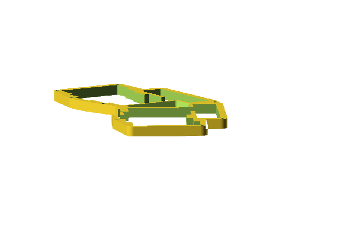
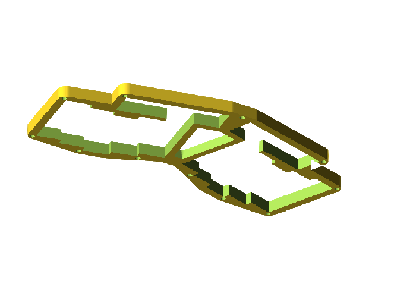
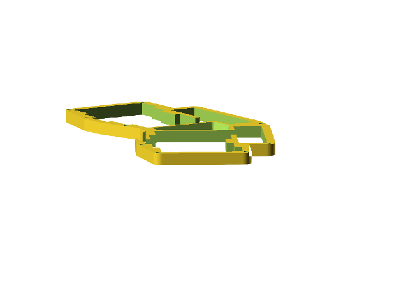
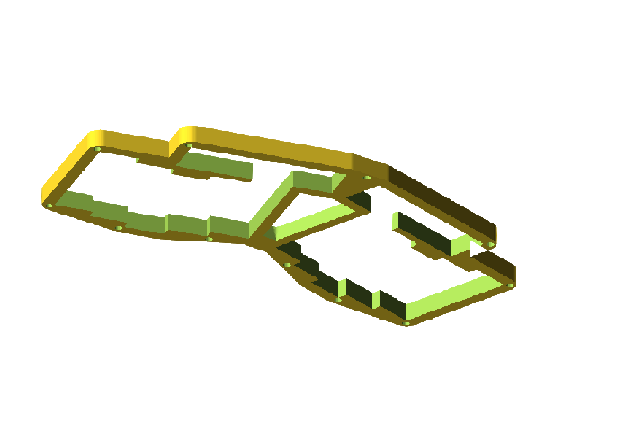
 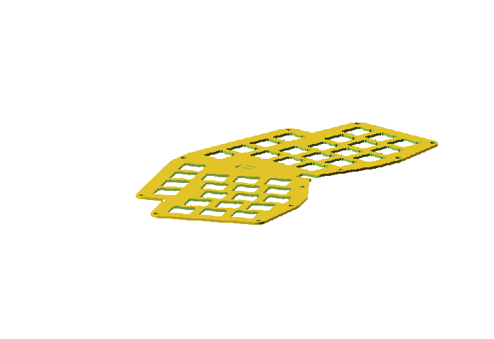
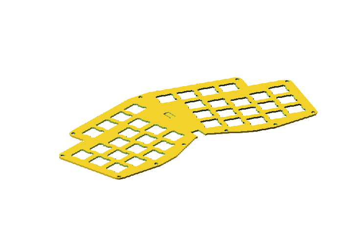
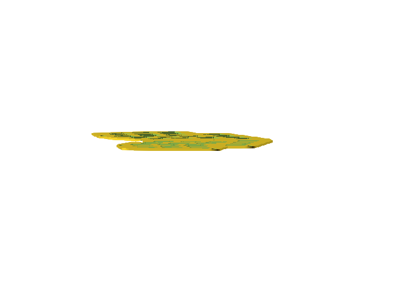
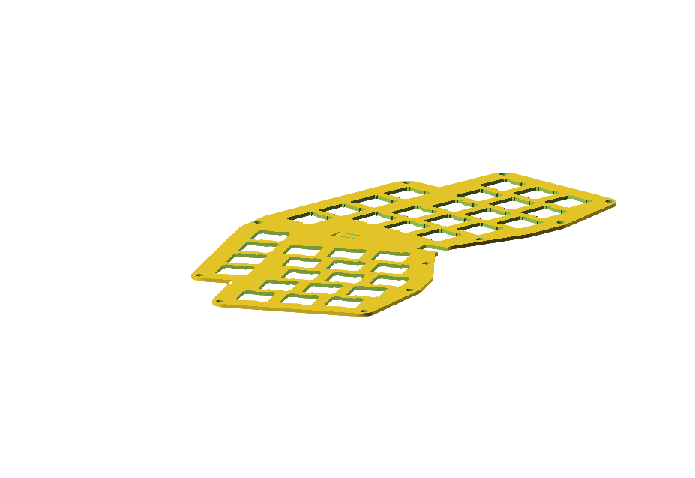
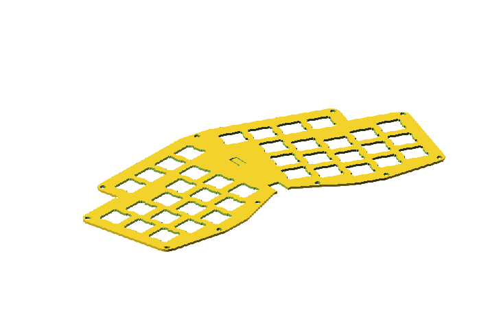
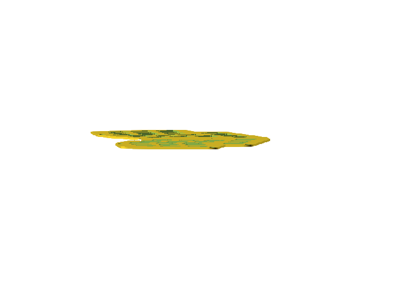


 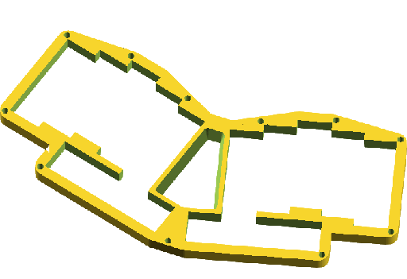
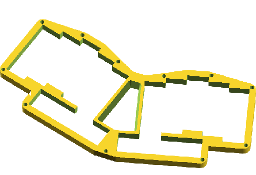


Tee raportti, jossa kerrot
- miksi päädyit tähän työhön
- mitä ohjelmia käytit
- miten rakensit toiminnallisuuden (???)
- miten etenit, mitä haasteita kohtasit ja miten ne ratkaisit
- miten kehittäisit eteenpäin
t. Maria